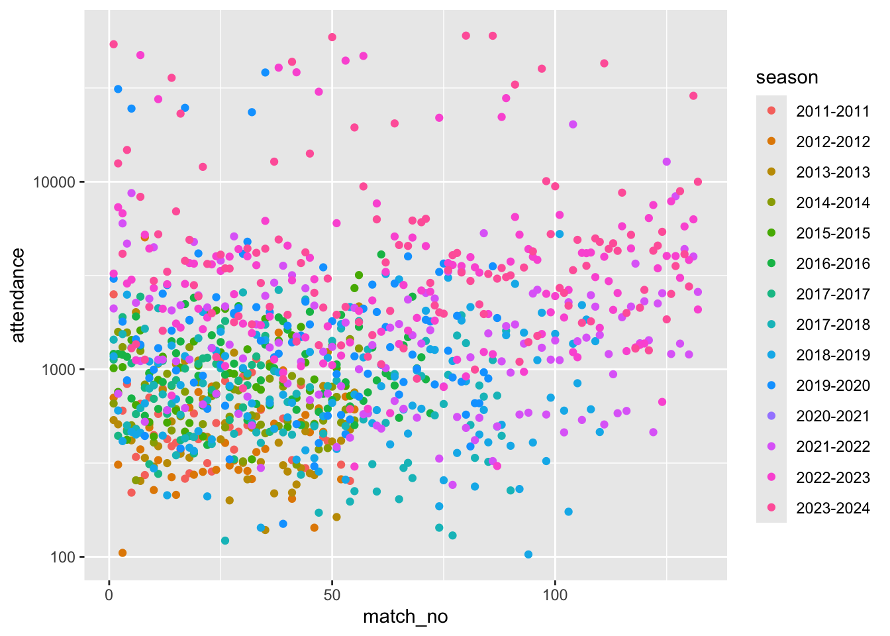

After a bit of a (in Jon’s view) dearth of interesting datasets within Tidy Tuesday, this week brought something worth looking at to the table: datasets on women’s football over the last few years, including changes in its popularity, as measured by attendance.
Kate led this session.
Setting up
Code
library(tidyverse)
── Attaching core tidyverse packages ──────────────────────── tidyverse 2.0.0 ──
✔ dplyr 1.1.4 ✔ readr 2.1.5
✔ forcats 1.0.0 ✔ stringr 1.5.1
✔ ggplot2 3.5.1 ✔ tibble 3.2.1
✔ lubridate 1.9.3 ✔ tidyr 1.3.1
✔ purrr 1.0.2
── Conflicts ────────────────────────────────────────── tidyverse_conflicts() ──
✖ dplyr::filter() masks stats::filter()
✖ dplyr::lag() masks stats::lag()
ℹ Use the conflicted package (<http://conflicted.r-lib.org/>) to force all conflicts to become errors
Warning: Removed 1 row containing missing values or values outside the scale range
(`geom_col()`).
For some reason, there was no attendance in the 2020-2021 season. Definitely something unexpected that we should investigate further, as 2020 was a completely normal year in every way
What about trends in season, e.g. are the first matches more popular than the rest, much like the first episodes of TV series tend to be watched more than the rest of the series?
Warning: Removed 1188 rows containing missing values or values outside the scale range
(`geom_point()`).
Note we used a log y scale as attendance seems to be very variable between matches. However we couldn’t see any obvious trend within season.
We also decided just to focus on tier 1
Code
ewf_matches %>%filter(tier ==1) %>%group_by(season) %>%mutate(match_no =order(date)) %>%ggplot(aes(x = match_no, y = attendance, colour = season, group = season)) +geom_point() +scale_y_log10()
Warning: Removed 178 rows containing missing values or values outside the scale range
(`geom_point()`).

Modelling
We then decided to try to model factors that could predict (log) attendance. First a model predicting log-attendance on home team id, match number, and season, but without interaction terms. And then a model with interaction terms:
How to compare? Well, as mod1 can be considered as a restricted version of mod2 (the interaction term coefficents set to 0) we can use ANOVA to see if the additional complexity of the unrestricted model, mod2, is ‘worth it’:
anova(mod1, mod2) # same as above but pulls out specific test that we are interested in
Analysis of Variance Table
Model 1: log10(attendance) ~ home_team_id + match_no + season
Model 2: log10(attendance) ~ home_team_id + match_no + season + season *
match_no
Res.Df RSS Df Sum of Sq F Pr(>F)
1 994 87.711
2 982 86.203 12 1.5079 1.4314 0.1453
We concluded:
Interaction term not significant - proceed with mod1
We thought we could do more to visualise the difference in apparent popularity between teams, producing some ‘tie fighter’ graphs (also known as blobograms, apparently)
Compared with the reference team (Arsenal Women) only 3 teams looked similarly popular: team 8 (Chelsea Women), team 20 (Manchester City), and team 21 (Manchester United).
Then we decided to do the same kind of thing for season, which should showing growing popularity over time: